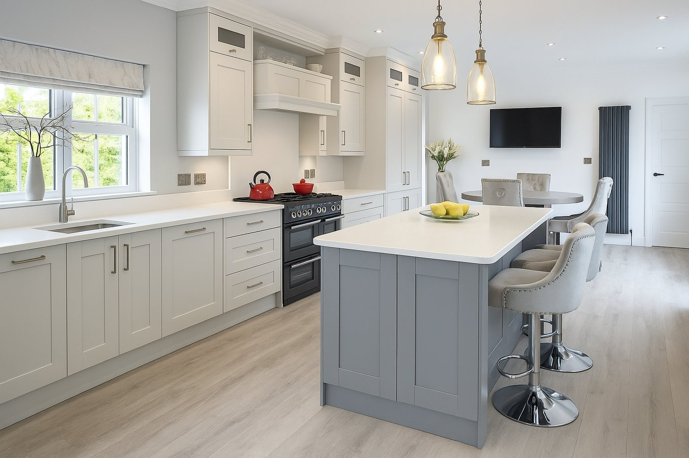
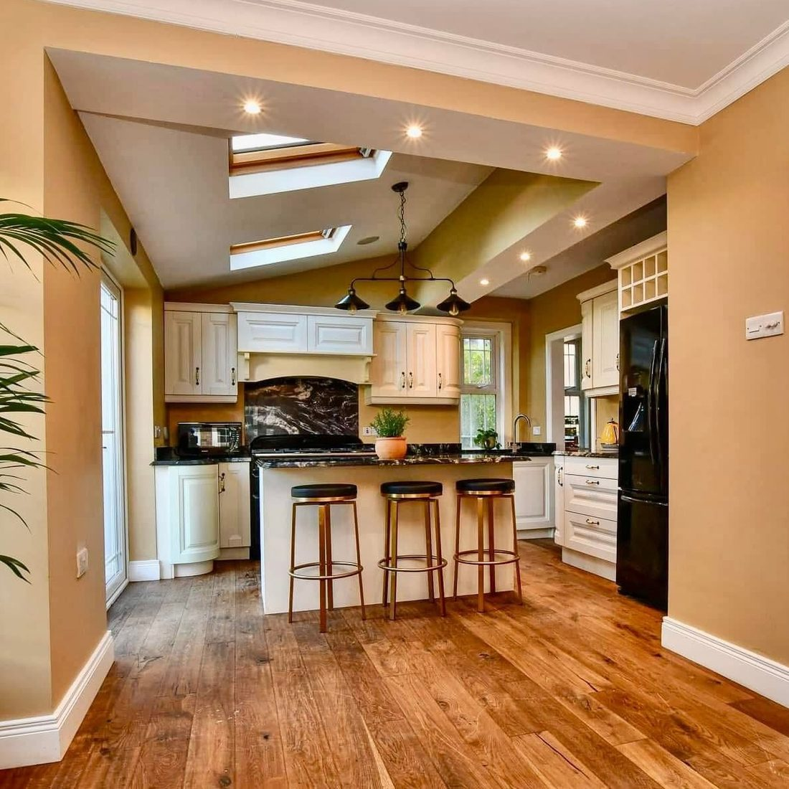
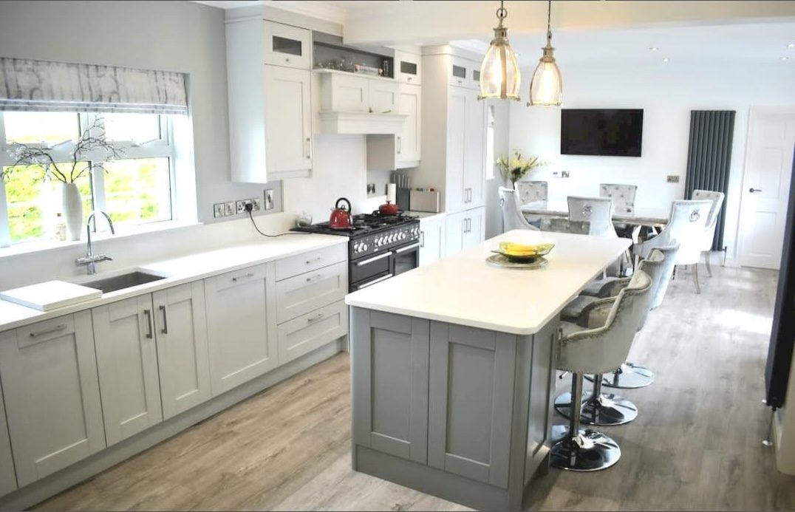
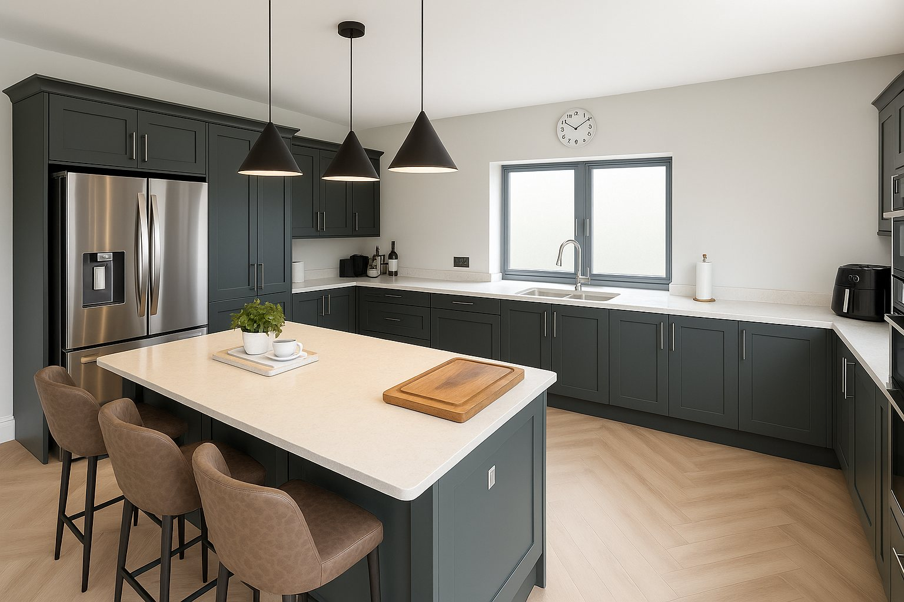

03Recent work





Bespoke kitchens & fitted joinery · Tyrone · Fermanagh · Derry · Donegal
Kitchens, wardrobes and fitted joinery — CNC-precise, made in our Donegal workshop. Designed, machined and installed by the maker within about an hour of Pettigo and Omagh; manufactured for delivery anywhere across NI & Ireland. No showroom, no middleman.
Every component is cut on an industrial CNC — not by hand or by eye. Tight tolerances, clean joints and square, solid carcasses, with the same accuracy on the first cabinet and the fiftieth.
Paul designs, quotes and manufactures every job himself. One point of contact from first drawing to final fit — no salesperson, no middleman.
Quotes returned in 3–5 working days. Delivery dates set by actual workshop capacity, not sales targets — so the date you're given is the date it lands.



Whether it's a single kitchen for a Donegal cottage or thirty identical units for a housing scheme, the process is the same — same precision, same point of contact. We take batch and repeat cabinetry off your plate, delivered to spec.
Every kitchen is priced individually to your layout, materials and appliances, so we don't publish fixed prices — but we return a detailed, itemised quote within 3–5 working days of seeing your space or your drawings. Our work sits at the considered, quality end of the market rather than the flat-pack end.
We're based in Omagh, Co. Tyrone and cover Tyrone, Fermanagh, Derry/Londonderry and Co. Donegal, along with the surrounding border counties. We offer a full design-and-install service within about an hour of Pettigo and Omagh, and manufacture-and-deliver further afield across Northern Ireland and Ireland.
It depends on the size of the job and current workshop capacity. Because we design, machine and fit everything in-house, we give you a real delivery date with your quote — based on actual capacity, not a guess.
You deal directly with the maker. Paul designs your kitchen in 3D, machines it on an industrial CNC and installs it himself — made to your exact layout, with one point of contact, no showroom markup and no sub-contracted fitters. You see it before it's built, and get exactly what you saw.
Both. For homeowners we offer the full design, manufacture and installation service. For trade and self-build we also supply CNC-cut, edge-banded kitchen carcasses and panels for you to fit yourself.
Design is a paid service that's redeemed against your order if you go ahead — so you get proper 3D drawings and a real plan for your space, rather than a sales pitch.
Yes — fitted wardrobes and bedroom furniture, media walls, boot rooms, home offices and other built-in joinery, all made to the exact dimensions of your room.
We design and manufacture from our workshop in Pettigo, Co. Donegal. Full design-and-install service within about an hour of Pettigo and Omagh; manufacture-and-deliver anywhere else across NI & Ireland. Tell us about your space and we'll come back within 3–5 working days.
AREAS WE COVER: Omagh & Tyrone · Fermanagh · Derry / Londonderry · Donegal